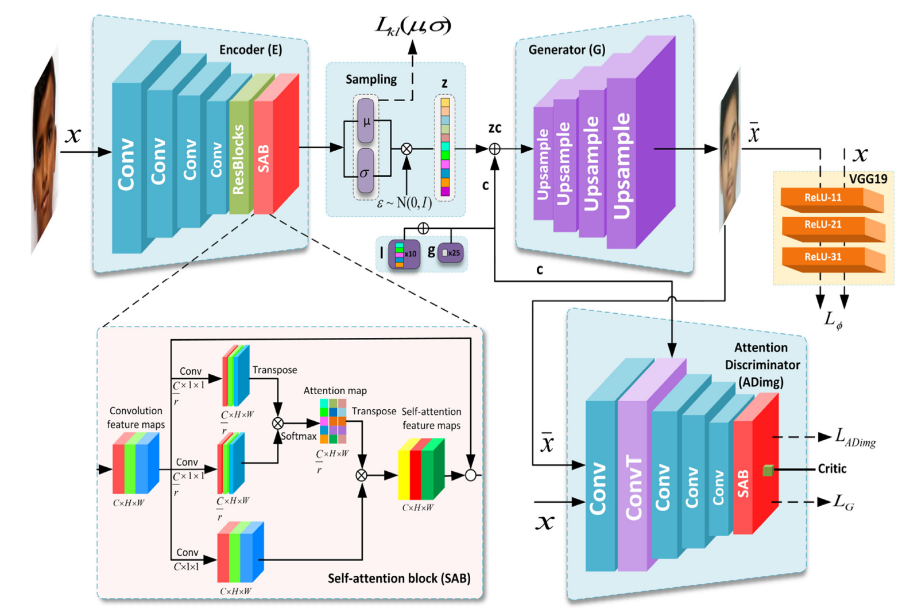

Introduction
Hi, My name is Rohit Das. I am a researcher from Tripura, India. Currently pursuing my master's in national Taiwan Normal University Taiwan.
I am currently enrolled as a researcher in CI3D Lab under professor Tzunghan Lin
Education
National Taiwan Normal University
Master's in Computer Science and Information Engineering
Specializing in Computer Vision, Image processing, Neural Networks, Generative Models(GAN)
August 2021 - June 2023
Camellia Institue of Technology
Bachelor's in Computer Science
July 2014 - July 2018
Work Experience
Researcher in CI3D Lab under professor Tzunghan Lin
Topic of Research - 3D-GANTex 3D Face Reconstruction with StyleGAN3-based Multi-View Images and 3DDFA based Mesh Generation
April 2022 - July 2023
Researcher in DCCV Lab under professor Chiou-Shann Fuh
Topic of Research - BGA Reconstruction: Solder ball Grid Array Reconstruction from Sinogram Image
December 2021 - Jan 2022
Jr. Automation Engineer in BAAR
Implemented state of the Art Automation technologies. Mostly Web Automation and process Automation
August 2019 - Dec 2019
Coursework
Computer Vision
Advanced Image Processing
Artificial Neural Networks
Machine Learning
Advanced Computer Vision
Computer Vision and Application
Data Visualization
Deep Learning
Tech Stack
Research
I have done substantial amount of research in 3D field especially 3D Face Reconstruction, Texture Estimation, Latent Space , Computed Tomography.
Texture Estimation
Texture estimation from a single image is a task in computer vision that aims to infer the underlying texture properties of an object or scene based on a single input image.
I mostly worked on texture estimation from one shot images of human face.
Learn more about my research here
Computed Tomography
Computed Tomography (CT) is a non-destructive imaging technique used to visualize and examine the internal structure of objects in three dimensions.
It is commonly used in various industries, including electronics, for quality control and inspection purposes.
I worked on Ball Grid Array Reconstruction from sinogram images to figure out defects.
Learn more about it here
Projects
Below are my projects related to my research.
3D-GANTex 3D Face Reconstruction with StyleGAN3-based Multi-View Images and 3DDFA based Mesh Generation
Implemented a novel approach for texture estimation from a single image using a generative adversarial network (StyleGAN3) and 3D Dense Face Alignment (3DDFA).
The SOTA method begins by generating multi-view faces using the latent space of StyleGAN3 using Restyle encoder.
Then 3DDFA generate a high-resolution texture map and map it to 3D model that is consistent with the estimated face shape.
GitHub Link here
ChildGAN- Finding Missing Children
Implemented GAN model which facilitate face age progression and regression, cross-age face recognition, age estimation, gender prediction, and kinship face recognition.
The model uses self - Attention GAN structure which basically helps in maintaining and keeping the utmost facial details.
GitHub Link here

Ball Grid Array Reconstruction
Implemented Simultaneous Algebraic Reconstruction Technique (SART) to minimize error on reconstructing Ball grid Array Image from sinogram.
GitHub Link here
Publications
A survey of the Normal Map Generation of GIMP from Single Shot Human Face Image
Conference paper submitted in 3DDSA on November 2022
This study proposes the idea of generating near to accurate normal map from a single image of human face.
We used 70,000 human face images from Flickr-Faces-High-Quality Dataset and used various software to automatically generate individual normal map which is a critical layer in various applications.
From experiments regarding different scenarios, we concluded that the proposed system performs acceptably for generating normal image for human face.
Paper Link here
Awards
NTNU Scholarship
Received scholarship from NTNU for pursuing Master's in Computer Science